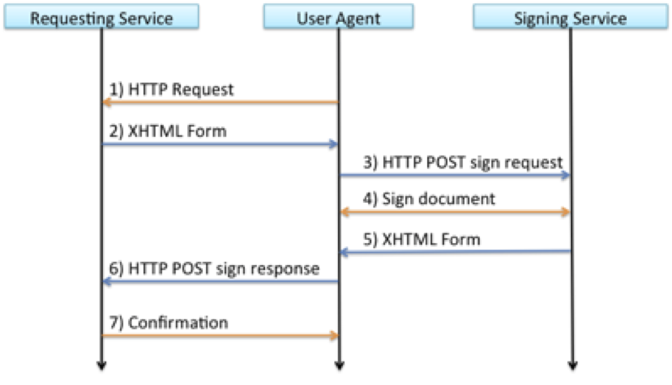

Implementation Profile for using OASIS DSS in Central Signing Services
Version 1.6 - 2024-11-26 - Draft version
Registration number: 2019-312
Copyright © The Swedish Agency for Digital Government (Digg), 2015-2024. All Rights Reserved.
Table of Contents
-
1.1. Terminology
1.3. Namespace references
1.4. Identification
1.5. Structure
Sign request and response messages
2.1. Sign Requests
2.1.1. Signature on Sign Requests
2.1.2. Data To Be Signed
2.1.3. DSS Extension
2.1.3.1. Version
2.1.3.2. Conditions
2.1.3.3. Signer
2.1.3.4. IdentityProvider
2.1.3.5. SignRequester
2.1.3.6 SignService
2.1.3.7. RequestedSignatureAlgorithm
2.1.3.8. SignMessage
2.1.3.8.1. SignMessage Element
2.1.3.8.2. Requesting Identity Provider to Display SignMessage
2.1.3.9. CertRequestProperties
2.1.3.9.1. AuthnContextClassRef
2.1.3.9.2. RequestedCertAttributes
2.2. Sign Responses
2.2.1. Signature on Sign Responses
2.2.2. Sign Response Status Information
2.2.3. Generated Signature
2.2.4. DSS Extension
2.2.4.1. Version
2.2.4.2. ResponseTime
2.2.4.3. Request
2.2.4.4. SignerAssertionInfo
2.2.4.5. SignatureCertificateChain
-
3.1.1. Sign Request XHTML Form
3.1.2. Sign Response XHTML Form
-
4.1. Normative References
1. Introduction
This document specifies an implementation profile for exchange of sign requests and responses using the OASIS DSS protocol [DSS], enhanced by the DSS Extensions for Federated Central Signing Services [DSS-Ext].
Section 2 defines the sign request and response messages and section 3 defines the transport of these messages using HTTP POST.
1.1. Terminology
| Term | Defined meaning |
|---|---|
| User | The entity requested to sign a document. |
| Requesting Service | The service requesting the signature on a particular document by a particular user. |
| Signing Service | A centralized service that manages the process to authenticate the user that has been requested to sign a document, and the process to obtain the user’s signature on the requested document. |
1.2. Requirement key words
The key words MUST, MUST NOT, REQUIRED, SHALL, SHALL NOT, SHOULD, SHOULD NOT, RECOMMENDED, MAY, and OPTIONAL are to be interpreted as described in [RFC2119].
These keywords are capitalized when used to unambiguously specify requirements over protocol features and behavior that affect the interoperability and security of implementations. When these words are not capitalized, they are meant in their natural-language sense.
1.3. Namespace references
Conventional XML namespace prefixes are used throughout the listings in this specification to stand for their respective namespaces as follows, whether or not a namespace declaration is present in the example:
| Prefix | XML Namespace | Comments |
|---|---|---|
| csig | http://id.elegnamnden.se/csig/1.1/dss-ext/ns |
For the DSS extension namespace [DSS-Ext] (default namespace). |
| dss | urn:oasis:names:tc:dss:1.0:core:schema |
The DSS core namespace [DSS]. |
| ds | http://www.w3.org/2000/09/xmldsig\# |
The XML Signature Syntax and Processing specification [XMLSig] and its governing schema [XMLSig-XSD]. |
| saml | urn:oasis:names:tc:SAML:2.0:assertion |
The SAML V2.0 assertion namespace, defined in the schema [SAML-XSD]. |
1.4. Identification
The following URI identifier identifies this profile:
http://id.elegnamnden.se/csig/1.1/dss-ext/profile
1.5. Structure
This specification uses the following typographical conventions in text:
<EidElement>, <ns:ForeignElement>, Attribute, Datatype,
OtherCode.
2. Sign Request and Response Messages
This section defines a profile for sign requests and responses using the OASIS DSS standard [DSS] in combination with “DSS extensions for Federated Central Signing Services” [DSS-Ext].
In the following sections the OASIS DSS standard is referred to as “DSS” and the DSS extensions are referred to as “DSS-Ext”.
Conformance with this implementation profile requires full conformance with DSS and DSS-Ext. In case of conflict between DSS-Ext and DSS, DSS-Ext is the normative one. In case of differences between this implementation profile and DSS-Ext, this implementation profile is the normative one.
2.1. Sign Requests
Sign requests are carried in a <dss:SignRequest> element according to requirements and conditions of the following subsections.
The <dss:SignRequest> element MUST have a Profile attribute with the value http://id.elegnamnden.se/csig/1.1/dss-ext/profile, which specifies conformance to this implementation profile.
The <dss:SignRequest> element MUST have a RequestID attribute with a value that uniquely identifies this request. The RequestID value MUST be a random generated value with at least 128 bit entropy and a length of at least 20 bytes.
2.1.1. Signature on Sign Requests
Sign requests MUST be signed. The signature MUST have a Same-Document URI-Reference (URI=””) to ensure that the signature covers the complete <dss:SignRequest> element.
The resulting <ds:Signature> element MUST be placed inside the <dss:OptionalInputs> element in accordance with section 5 of [DSS-Ext].
The Signature Service MUST NOT process the sign request unless the signature of the sign request can be authenticated as originating from a legitimate Requesting Service.
2.1.2. Data To Be Signed
A representation of the document to be signed MUST be provided in accordance with section 4.1 of [DSS-Ext].
Data to be signed MUST be provided in a <SignTaskData> element.
The <SignTasks> element MAY contain one or more <SignTaskData> elements, representing one or more requested signatures.
2.1.3. DSS Extension
The <dss:OptionalInput> element of the sign request MUST contain a
<SignRequestExtension> element according to requirements and
conditions of the following subsections.
2.1.3.1. Version
The Version attribute giving the version number of the [DSS-Ext] specification
SHOULD be set to the version number that is supported by the sender.
If absent, the default value "1.1" MUST be assumed.
2.1.3.2. Conditions
A <saml:Conditions> element MUST be present. This element MUST NOT
contain any information in addition to what is defined in section 3.1 of
[DSS-Ext].
If the <saml:Conditions> element contains the NotBefore and/or NotOnOrAfter attributes, the Signature Service consuming these values MAY consider them in its processing. However, a Signature Service MUST have a limitation on the maximum age of received messages, and if NotOnOrAfter exceeds this limitation, the NotOnOrAfter value MUST be ignored.
This specification does not state how long the message age limitation should be. However, it is RECOMMENDED that it does not exceed 3 minutes.
2.1.3.3. Signer
The Requesting Service MAY include a <Signer> element containing the SAML attributes that
are necessary in order to uniquely identify the signer. The present attributes MUST match the attributes
that are provided for this signer when authenticating the signer using the Identity Provider specified in the <IdentityProvider> element.
It is RECOMMENDED that a Signature Requester that has authenticated the user before sending a
signature request includes relevant SAML attributes in the <Signer> element. If this is not done,
the identity of the signer needs to be verified after the signature process has completed in order to ensure
that the authenticated user was the signer.
The Signing Service MUST match all attribute values provided in the
<Signer> element with SAML attributes provided for this signer
subject in a valid assertion obtained from the specified Identity
Provider.
If any of the attributes specified in the <Signer> element cannot
be found or matched with a corresponding attribute value from an
obtained assertion from the specified Identity Provider, the Signing
Service MUST reject the sign request.
2.1.3.4. IdentityProvider
This element MUST be present, specifying the SAML entityID of the Identity Provider that MUST be used to authenticate the signer. The Signing Service MUST NOT generate the requested signature unless the signer is successfully authenticated through this Identity Provider.
2.1.3.5. SignRequester
This element MUST be present, specifying the identity of the Requesting Service in the form of its SAML entityID.
2.1.3.6 SignService
This element MUST be present, specifying the SAML entityID of the Signing Service that is the target of this sign request.
2.1.3.7. RequestedSignatureAlgorithm
This element MAY be present, specifying a URI that identifies a signature algorithm that the Requesting Service prefers to be used when generating the requested signature.
When this element is absent, the default signing algorithm is RSA with
SHA-256, http://www.w3.org/2001/04/xmldsig-more#rsa-sha256.
2.1.3.8. SignMessage
2.1.3.8.1. SignMessage Element
This element MAY be present to provide information that the Identity
Provider MAY display for the user before obtaining the user’s consent to
sign. The message MAY be provided in clear text or in encrypted form.
The attribute MustShow MUST be set to true if the Identity Provider is
required to show this message to the user. When the message is provided
in encrypted form, the DisplayEntity attribute MUST include the entityID
of the Identity Provider holding the private decryption key. The
encryption key included in the metadata of the identified Identity
Provider SHOULD be used to encrypt the message.
The message MUST be encoded using UTF-8 and MUST be using one of the
formats plain text, HTML or markdown. The appropriate MIME type must be
declared in the MimeType attribute.
For messages in HTML format, the message MUST NOT contain tags and attributes for each tag other than those listed in the following table:
| HTML Tags | Type | Allowed attributes |
|---|---|---|
| h1, h2, h3, h4 | Headings | style |
| div, span, p | Section | style |
| table, tr, td | Table | style |
| b, strong | Highlight | style |
| i, u, br | Format | |
| ol, ul, li | List |
Allowed HTML entities for character replacement SHALL be restricted to
amp, gt, lt, quot and nbsp (in the form &entity-name;).
HTML messages MUST NOT contain any URI references to data outside of the message and MUST NOT contain any JavaScript in any form.
2.1.3.8.2. Requesting Identity Provider to Display SignMessage
The means through which the Service Provider requests the Identity Provider to display a sign message is defined in section 7.1.1 of “Deployment Profile for the Swedish eID Framework” [Eid-Profile].
In addition to the requirements in section 7.1.1 of [Eid-Profile] the
Signature Service MUST apply the following process regarding the inclusion of the
AuthnContextClassRef URI to include in the AuthnRequest sent to the Identity Provider
when authenticating the user for signing:
Determine requested LoA (Level of Assurance) by either:
Get the LoA, or LoA:s, from the
AuthnContextClassRefspecified in the sign request asCertRequestProperties, orif the LoA reference from the sign request is absent then use the default LoA according to the governing policy.
Include the LoA URI(s) from the step above as
RequestedAuthnContextif supported by the Identity Provider. If none of the LoA:s are supported by the Identity Provider, fail signing and return an error sign response, indicating a request failure (the requested LoA(s) was inconsistent with the specified Identity Provider).
2.1.3.9. CertRequestProperties
This element MAY be present to provide requested properties of generated signature certificates according with section 3.1.1 of [DSS-Ext].
When the CertType attribute is present with a value of QC/SSCD the signature service MUST request authentication in accordance with section 7.1.2 of “Deployment Profile for the Swedish eID Framework” [Eid-Profile], or reject the request.
2.1.3.9.1. AuthnContextClassRef
This element MAY be present to specify the Level of Assurance(s) required in order to issue the signing certificate.
2.1.3.9.2. RequestedCertAttributes
This element MAY be present to specify any number of attributes that the Requesting Service requires or requests to be included as a representation of the subject in the signature certificate that is generated with the requested signature.
The Signature Service MUST NOT generate the requested signature unless it can obtain attribute values from an authoritative source for all requested attributes that is marked as "required". The Signature service SHOULD attempt to provide all "requested" attributes.
The Signing Service MAY use an Attribute Authority as complementary
source to obtain requested attribute values, as long as the identity
assertion provided by the specified Identity Provider is sufficient to
uniquely identify the signer. The Sign Requester MAY provide one or more
SAML entityID identifiers of Attribute Authorities in
<AttributeAuthority> elements, which could be used to obtain an
attribute value for the requested attribute.
It is left to local policy of the Signature Service whether it accepts
any DefaultValue attribute value for any requested attributes as being
provided by an authoritative source. If a DefaultValue is accepted as
authoritative, it MUST NOT conflict with any attributes received by the
specified Identity Provider or Attribute Authority when authenticating
the signer. If the requested attribute is provided by the Identity
Provider or any Attribute Authority used by the Signing Service, then
these values MUST be used over the DefaultValue.
2.2. Sign Responses
Sign responses are carried in a <dss:SignResponse> element
according to requirements and conditions of the following subsections.
The <dss:SignResponse> element MUST have a Profile attribute with
the value http://id.elegnamnden.se/csig/1.1/dss-ext/profile, which
specifies conformance to this implementation profile.
The <dss:SignResponse> element MUST have a RequestID attribute
with a value that is identical to the sign request that is being
serviced through this sign response.
2.2.1. Signature on Sign Responses
Sign responses MUST be signed. The signature MUST have a Same-Document
URI-Reference (URI=””) to ensure that the signature covers the complete
<dss:SignResponse> element.
The resulting <ds:Signature> element MUST be placed inside the
<dss:OptionalOutputs> element in accordance with section 5 of
[DSS-Ext].
2.2.2. Sign Response Status Information
Implementations of this specification MUST return a
<dss:ResultMajor> value and MAY return a <dss:ResultMinor>
value. Implementations of this specification are released from the
requirement to return any of the listed values of
<dss:ResultMinor>, specified in the DSS standard, when returning
the <dss:ResultMajor> value
urn:oasis:names:tc:dss:1.0:resultmajor:Success, since all the listed
<dss:ResultMinor> values relates to signature validation and not
signature creation.
With the exception above, the response values defined in section 2.6 of the DSS standard, amended by status identifiers defined below* SHOULD be used.
| URL | Description |
| :--- | :--- | :--- |
| http://id.elegnamnden.se/sig-status/1.0/req-expired | The time window for the signature request has expired. |
| http://id.elegnamnden.se/sig-status/1.0/user-mismatch | The authenticated user does not match the signer identity attributes in the request.
| http://id.elegnamnden.se/sig-status/1.0/unsupported-loa | The requested level of assurance for user authentication is not supported. |
| http://id.elegnamnden.se/sig-status/1.0/sigmessage-error | A requirement to display sign message was included in the sign request, but the sign service could not establish that the sign message was displayed to the user. |
| http://id.elegnamnden.se/sig-status/1.0/user-cancel | The end user cancelled the signature operation. |
| http://id.swedenconnect.se/sig-status/1.1/authn-failed | The authentication during the signature operation failed. |
| http://id.swedenconnect.se/sig-status/1.1/security-violation | The Signature Service, or Identity Provider authenticating the end user, has detected a security violation (such as a possible fraud). |
Note: The authn-failed and security-violation codes were introduced for version 1.5 (of [DSS-Ext]), and a client not supporting this version will fail to understand these error codes. Whether a Signature Service checks the client version support or not before using these codes are out of scope for this profile.
[*]: Also listed in section 3.1.7 of [Eid-Registry].
2.2.3. Generated Signature
The generated signature result data SHALL be provided in
<SignTaskData> element according to section 4.1.1 of [DSS-Ext].
One <SignTaskData> element shall be provided for each successfully
generated signature as a result of the corresponding request.
2.2.4. DSS Extension
The <dss:OptionalInput> element of the sign response MUST contain
a <SignResponseExtension> element according to requirements and
conditions of the following subsections.
2.2.4.1. Version
The version of the [DSS-Ext] specification under which the
request was processed and response was constructed. This version MUST be the same
version as given in the SignRequestExtension (see section 2.1.3.1, "Version)".
For backwards compatibility reasons that attribute MAY be absent if version "1.1" was requested. Otherwise it MUST be set.
2.2.4.2. ResponseTime
The <ResponseTime> element MUST be present in the response.
2.2.4.3. Request
The <Request> element MAY be present in a response. However, it is RECOMMENDED not to include this
element since it makes the response message unnecessary large. Instead the requester of a sign operation
is expected to save the request message in its session for later use when processing a response message.
2.2.4.4. SignerAssertionInfo
The <SignerAssertionInfo> element MUST be present if the signer
has been successfully authenticated using the specified Identity
Provider. The present <ContextInfo> child element MUST include an
<AssertionRef> child element. The <AssertionRef> child
element MUST contain the value of the ID attribute of the root element
of the SAML assertion used to authenticate the signer.
2.2.4.5. SignatureCertificateChain
The <SignatureCertificateChain> element MUST be present if a
certificate was issued to the signer. This element MUST provide a
complete chain of certificates up to a self-signed root certificate.
All signature values according to section 2.2.3 MUST be verifiable using the signer certificate provided in this element.
3. HTTP POST Binding
This section specifies the protocol binding for transport of sign request and sign response messages using HTTP POST. This protocol binding implements the message exchange model in section 3.1.
This process is technically equivalent to the procedures implemented by SAML HTTP POST bindings [SAML2Bind], section 3.5.
3.1. Message Exchange Model
Sign request and response messages are exchanged between the Requesting Service and the Signing Service with the user acting as an intermediary through a user agent (typically a web browser) according to the following message flow:

The user agent initiates the signing process by an HTTP request to the Service Provider, for example caused by the user clicking a button on a web page.
The Service Provider responds to the user agent with an XHTML form, containing a Base64 encoded sign request.
A JavaScript in the XHTML form causes the user agent to send the sign request to the Signing Service using HTTP POST.
The user interacts with the Signing Service to complete the requested signature.
The Signing Service responds to the user agent with an XHTML form, containing a Base64 encoded sign response.
A JavaScript in the XHTML form causes the user agent to send the sign response to the Service Provider using HTTP POST.
The Service Provider processes the sign response and a confirmation or status message is returned to the user agent.
The steps 1,4 and 7 are part of the service infrastructure and are outside the scope of this HTTP POST binding specification.
3.1.1. Sign Request XHTML Form
The sign request XHTML form SHALL have functional properties that are equivalent to the following implementation example:
<?xml version='1.0' encoding='UTF-8'?>
<!DOCTYPE html PUBLIC '-//W3C//DTD XHTML 1.1//EN' 'http://www.w3.org/TR/xhtml11/DTD/xhtml11.dtd'>
<html xmlns='http://www.w3.org/1999/xhtml' xml:lang='en'>
<body onload='document.forms[0].submit()'>
<noscript>
<p><strong>Note:</strong> Since your browser does not support JavaScript,
you must press the Continue button once to proceed.</p>
</noscript>
<form action='https://csig.example.com/signrequest' method='post'>
<div>
<input type='hidden' name='Binding' value='POST/XML/1.0'/>
<input type='hidden' name='RelayState' value='56345145a482995d'/>
<input type='hidden' name='EidSignRequest' value='PD94bWw…WVzdD4='/>
</div>
<noscript>
<div>
<input type='submit' value='Continue'/>
</div>
</noscript>
</form>
</body>The form’s action attribute specifies the URL to the Signing Service and the form MUST have a method attribute with the value “post”.
The form MUST provide the following parameters:
| Parameter | Value |
|---|---|
| Binding | “POST/XML/1.0” Identifying implementation of this binding specification |
| RelayState | This parameter MUST contain the value of the RequestID attribute of the <dss:SignRequest> element that is present in the base64 encoded sign request. |
| EidSignRequest | Base64 encoded sign request. |
3.1.2. Sign Response XHTML Form
The sign response XHTML form SHALL have functional properties that are equivalent to the following implementation example:
<?xml version='1.0' encoding='UTF-8'?>
<!DOCTYPE html PUBLIC '-//W3C//DTD XHTML 1.1//EN' 'http://www.w3.org/TR/xhtml11/DTD/xhtml11.dtd'>
<html xmlns='http://www.w3.org/1999/xhtml' xml:lang='en'>
<body onload='document.forms[0].submit()'>
<noscript>
<p><strong>Note:</strong> Since your browser does not support JavaScript,
you must press the Continue button once to proceed.</p>
</noscript>
<form action='https://sp.example.com/sigResponseHandler' method='post'>
<div>
<input type='hidden' name='Binding' value='POST/XML/1.0'/>
<input type='hidden' name='RelayState' value='56345145a482995d'/>
<input type='hidden' name='EidSignResponse' value='PD94bWw…WVzdD4='/>
</div>
<noscript>
<div>
<input type='submit' value='Continue'/>
</div>
</noscript>
</form>
</body>The form’s action attribute specifies the URL to the requesting Service
Provider. This URL MUST specify a URL from the
<saml:AudienceRestriction> element that was provided in the
corresponding sign request. The form MUST have a method attribute with
the value “post”.
The form MUST provide the following parameters:
| Parameter | Value |
|---|---|
| Binding | “POST/XML/1.0” Identifying implementation of this binding specification |
| RelayState | This parameter MUST contain the value of the RequestID attribute of the <dss:SignResponse> element that is present in the base64 encoded sign request. |
| EidSignResponse | Base64 encoded sign response. |
4. References
4.1. Normative References
Bradner, S., Key words for use in RFCs to Indicate Requirement Levels, March 1997.
S. Cantor et al., SAML assertions schema. OASIS SSTC, March 2005. Document ID: saml-schema-assertion-2.0. See http://www.oasisopen.org/committees/security/.
D. Eastlake et al, XML-Signature Syntax and Processing, W3C Recommendation, February 2002.
XML Signature Schema. World Wide Web Consortium. See https://www.w3.org/TR/xmldsig-core/xmldsig-core-schema.xsd.
4.2. Informative References
OASIS Standard, Bindings for the OASIS Security Assertion Markup Language (SAML) V2.0, March 2005.
5. Changes between versions
Changes between version 1.5 and version 1.6:
Section 2.2.2, "Sign Response Status Information", now defines the DSS status codes previously only appearing in [[Eid-Registry(#eid-registry)]. The status codes
http://id.swedenconnect.se/sig-status/1.1/authn-failedandhttp://id.swedenconnect.se/sig-status/1.1/security-violationwere also introduced.Section 2.1.3.2, "Conditions", was updated with requirements on how to interpret
NotBeforeand/orNotOnOrAftervalues.
Changes between version 1.4 and version 1.5:
The requirements in section 2.2.4.3, "Request", were updated. The
Requestelement is no longer mandatory to include in a response message.Sections 2.1.3.1 and 2.2.4.1 defining the requirements concerning the use of the
Versionattribute inSignRequestExtensionandSignResponseExtensionelements were updated in order to implement support for newer versions of the DSS extension specification.Section 2.1.3.3, "Signer", was updated so that it is no longer required to supply the
<csig:Signer>element. This enables use cases where the user is not known at the time of signature initiation.
Changes between version 1.3 and version 1.4:
Updates of references and change of logotype.
Updates to section 2.1.3.8.2, "Requesting Identity Provider to Display SignMessage", with a more simple process of determining the Level of Assurance URI to include in requests.
Changes between version 1.2 and version 1.3:
- In section 2.1.3.9, "CertRequestProperties", an requirement to adapt authentication request procedures when the requested signature is a qualified electronic signature was added.
Changes between version 1.1 and version 1.2:
- In section 2.2.2, a reference to section 3.1.5 in [Eid-Registry] was changed to section 3.1.7.
Changes between version 1.0 and version 1.1:
This profile now refers to version 1.1 of the “DSS Extensions for Federated Central Signing Services” specification.
Changes were made to section 2.1.3.8, “SignMessage”, in order to define usage of the
<SignMessage>element.The URI identifier that identifies this profile has been changed from
http://id.elegnamnden.se/csig/1.0/eid2-dss/profiletohttp://id.elegnamnden.se/csig/1.1/dss-ext/profile.